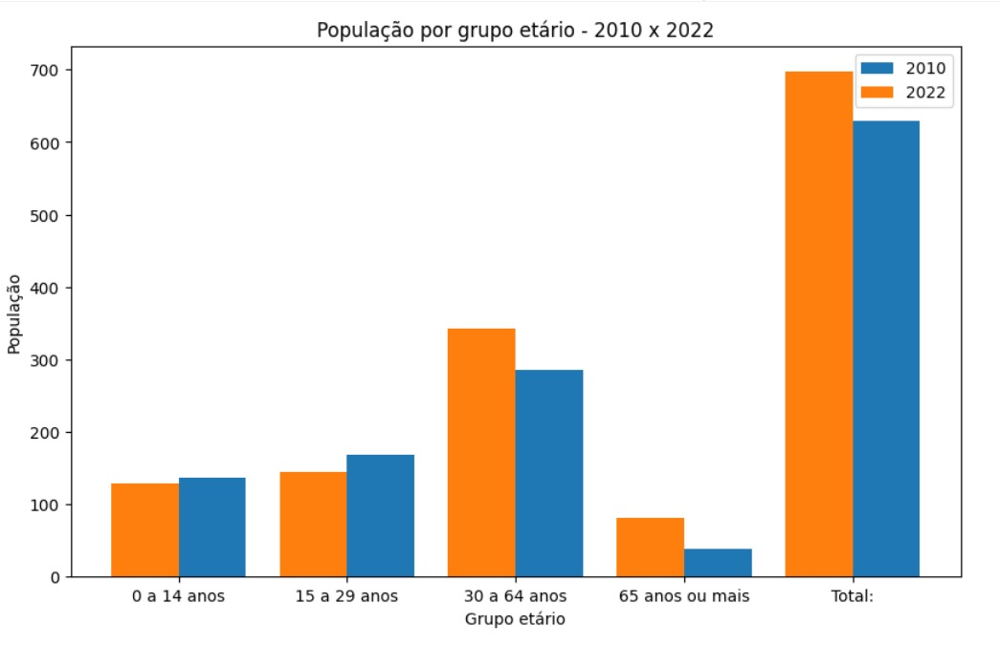
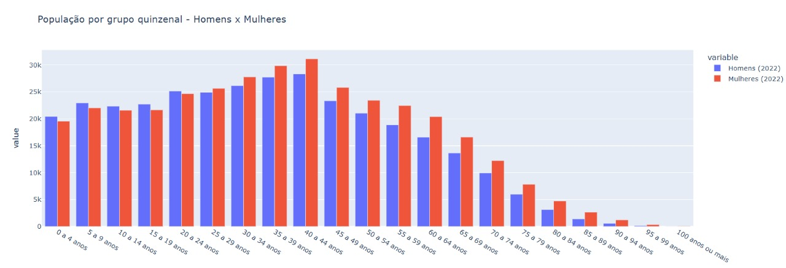
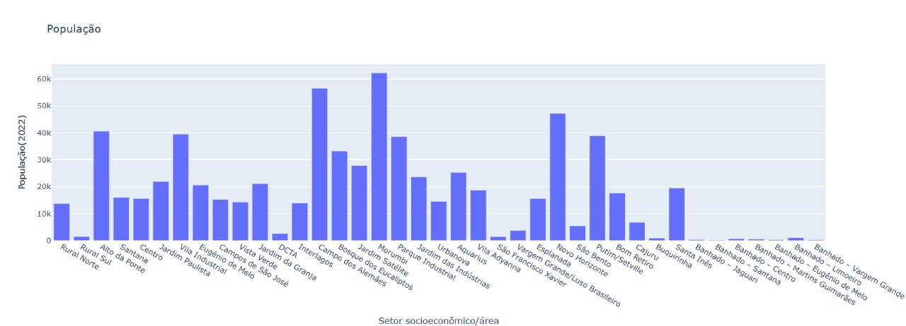
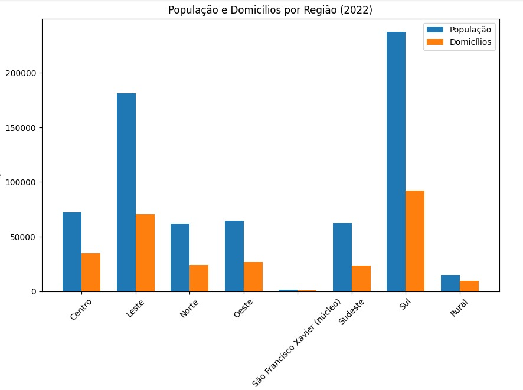

Home
Sobre
Principais Indicadores
Alguns dos principais indicadores de São José dos Campos
População por grupo etário

População por grupo quinzenal

População por bairro

População e domicílios por região
